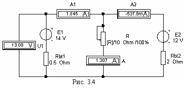

Задание 2. Согласно варианту задания собрать схему цепи (см. рис. 3.4) на рабочем поле программы EWB или программы MS8 Education (либо открыть файл lr3.ewb при выполнении работы в среде EWB или файл lr3.ms8 при выполнении работы в среде MS8SD) и установить:
- значения параметров элементов схемы цепи;
- режим DC работы приборов; внутренние сопротивления амперметров RA = 1 мОм, а вольтметров RV = 1 МОм.
Запустить программу (щелкнув мышью на цифре 1 кнопки ) и записать показания приборов в столбец R табл. 3.1.
